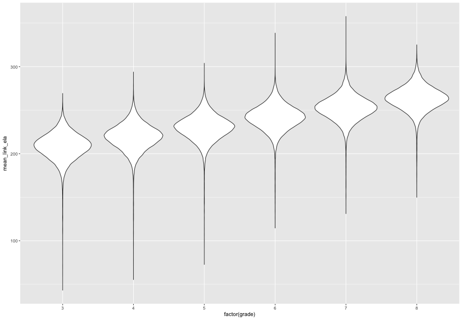

Things to cover today
- R Studio
- R Studio Projects
- Installing packages (specifically tidyverse)
- Reading in data (very briefly)
- The
$operator - Super basics of manipulating data with dplyr
- R Markdown basics
R Studio
[demo]
- Customizing the look/feel
- Theme
- Syntax highlighting
- Panes
- Keyboard shortcuts
- Snippets (briefly)
(consider the daily download version: https://www.rstudio.org/download/daily/desktop/)
R Studio Projects
- Start a new project and call it Lab 1.
- Once the Project has launched, create a new R script to save all your work for today. Run lines of code from the script with Command + Enter (mac) or Control + Enter (Windows).
[demo]
- This is really a note on working directories, reproducibility, and staying organized
- So, let’s talk about each a bit, before talking about projects
What’s a working directory?
- Where you’re at on your computer.
- See where you’re currently at by looking at the top of the console
- Or run
getwd()in the console
- Or run
- You can change your working directory, with
setwd("path/to/files/")but I’m going to recomend avoiding that - instead, use projects. - Use
list.files()to see the contents of your working directory (i.e., what your computer “sees”)

What’s different with projects?
- Your working directory is immediately wherever your project is.
- Use relative paths from there to read/save data
Create a new folder in Lab 1 called data and place the SEDA data there that you should have downloaded before class.
You should now see a new folder called data within your files tab in R Studio. You can use this to load the data - but that’s a crutch [demo].
Look at
list.files()again. You should see an object there called data. Try runninglist.files("./data/"). What do you see? (notice the quotes).
Packages
Getting started
- Install once with
install.packages() - Load each time with
library()
# Install once
install.packages("tidyverse")
# Load each time
library(tidyverse)
SEDA data
- Mean test score records for every school district in the United States
- Grades 3-8
- Reading and Math
- Mapped to a common scale (equated via NAEP results)
Load the data
- We’re going to use the rio package to load the data. Store it in an object called
dwith the following lines of code (note the relative path).
install.packages("rio")
library(rio)
d <- import("./data/seda.csv")
- It may seem like nothing happens. Try running
d. This will print whatever is stored in the object to the console (not technically, but close enough).
Let’s try it out!
- Load the tidyverse package and try to run the following code. What do you see? What do you make of it? (we’ll talk about the mechanics behind this a lot more later)
ggplot(data = d, aes(x = factor(grade), y = mean_link_ela)) +
geom_violin()

tidyverse packages
ggplot2 is one of the tidyverse packages. When you load the tidyverse, you actually load a bunch of R packages. It is shorthand for:
library(ggplot2)
library(tibble)
library(tidyr)
library(readr)
library(purrr)
library(dplyr)
We’ll talk about each of these packages (except purrrr, which we’ll probably only touch on near the end of the course), and you could load only one if that’s all you need. But for much applied work it’s easiest to just load them all.
How do we access variables?
- Generally, in this course, tidyverse tools
- Sometimes
$
d$leaname
## [1] "ALABAMA YOUTH SERVICES" "ALABAMA YOUTH SERVICES"
## [3] "ALABAMA YOUTH SERVICES" "ALBERTVILLE CITY"
## [5] "ALBERTVILLE CITY" "ALBERTVILLE CITY"
## [7] "ALBERTVILLE CITY" "ALBERTVILLE CITY"
## [9] "ALBERTVILLE CITY" "ALBERTVILLE CITY"
## [11] "ALBERTVILLE CITY" "ALBERTVILLE CITY"
## [13] "ALBERTVILLE CITY" "ALBERTVILLE CITY"
## [15] "ALBERTVILLE CITY"
Look at the structure of an object
str(d)
## 'data.frame': 326246 obs. of 10 variables:
## $ leaid : int 100002 100002 100002 100005 100005 100005 100005 100005 100005 100005 ...
## $ leaname : chr "ALABAMA YOUTH SERVICES" "ALABAMA YOUTH SERVICES" "ALABAMA YOUTH SERVICES" "ALBERTVILLE CITY" ...
## $ fips : int 1 1 1 1 1 1 1 1 1 1 ...
## $ stateabb : chr "AL" "AL" "AL" "AL" ...
## $ year : int 2009 2011 2012 2009 2009 2009 2009 2009 2009 2010 ...
## $ grade : int 8 8 8 3 4 5 6 7 8 3 ...
## $ mean_link_ela : num 211 232 226 204 207 ...
## $ se_link_ela : num 6.72 6.74 6.66 2.75 2.94 ...
## $ mean_link_math: num 221 NA 233 216 223 ...
## $ se_link_math : num 7.06 NA 6.98 2.01 2.34 ...
When $?
Quick and dirty
table(d$year)
##
## 2009 2010 2011 2012 2013
## 64961 65482 65651 65498 64654
hist(d$mean_link_math)

Your turn
- Run
tableon grade - Produce a histogram of mean_link_ela
demo
Some dplyr
- Subset rows with
filter
Subset the data for Oregon districts only
oregon <- filter(d, stateabb == "OR")
head(oregon)
## leaid leaname fips stateabb year grade
## 1 4100014 VALE SD 84 41 OR 2009 3
## 2 4100014 VALE SD 84 41 OR 2009 4
## 3 4100014 VALE SD 84 41 OR 2009 5
## 4 4100014 VALE SD 84 41 OR 2009 6
## 5 4100014 VALE SD 84 41 OR 2009 7
## 6 4100014 VALE SD 84 41 OR 2009 8
Filter math scores greater than 1 SD above the mean
high_scores <- filter(d, mean_link_math >
( mean(mean_link_math, na.rm = TRUE) +
sd(mean_link_math, na.rm = TRUE) )
)
head(high_scores)
## leaid leaname fips stateabb year grade mean_link_ela
## 1 100007 HOOVER CITY 1 AL 2009 8 279.2131
## 2 100007 HOOVER CITY 1 AL 2010 8 280.8796
## 3 100007 HOOVER CITY 1 AL 2011 8 280.6831
## 4 100007 HOOVER CITY 1 AL 2012 8 285.5630
## 5 100007 HOOVER CITY 1 AL 2013 7 266.6757
## 6 100007 HOOVER CITY 1 AL 2013 8 278.0945
## se_link_ela mean_link_math se_link_math
## 1 2.1861439 290.1542 1.9696212
## 2 2.2628996 293.5809 2.0264359
## 3 2.3093204 290.1017 1.9913683
## 4 2.5908723 290.2768 2.1161795
## 5 2.9194119 281.7469 1.9571117
## 6 2.1317954 288.7479 2.0119257
Multi-condition filter
Filter Oregon districts in 2010 with a score above the grand mean in math
high_or_2010 <- filter(d,
stateabb == "OR" &
year == 2010 &
mean_link_math > mean(mean_link_math, na.rm = TRUE))
head(high_or_2010)
## leaid leaname fips stateabb year grade
## 1 4100014 VALE SD 84 41 OR 2010 6
## 2 4100014 VALE SD 84 41 OR 2010 7
## 3 4100014 VALE SD 84 41 OR 2010 8
## 4 4100015 GERVAIS SD 1 41 OR 2010 7
## 5 4100015 GERVAIS SD 1 41 OR 2010 8
## 6 4100016 YAMHILL CARLTON SD 1 41 OR 2010 7
## mean_link_ela se_link_ela mean_link_math se_link_math
## 1 242.5301 6.066070 270.3978 5.622098
## 2 261.9599 4.640410 274.3947 4.234237
## 3 280.2133 3.832610 283.7229 3.130424
## 4 241.6093 4.011710 256.0161 4.194239
## 5 248.0321 3.353308 267.9512 4.008732
## 6 248.0531 3.842499 271.9846 3.583123
Select specific columns
Select leaid, year, grade, and math variables
math <- select(d, leaid, grade, year, contains("math"))
head(math)
## leaid grade year mean_link_math se_link_math
## 1 100002 8 2009 220.6698 7.0649977
## 2 100002 8 2011 NA NA
## 3 100002 8 2012 233.1264 6.9755855
## 4 100005 3 2009 216.3612 2.0081453
## 5 100005 4 2009 223.0344 2.3392658
## 6 100005 5 2009 230.4161 2.2901359
Your turn
Create a dataset that has the following properties
- Only California school districts in Grades 3-5.
- Only the 2012 school year
- Includes leaname, grade ELA mean and standard error
demo
A few notes on base R
- In base R, you generally subset with
[]. - The one place I will often use this in this class is with renaming variables
names(d)[1]
## [1] "leaid"
names(d)
## [1] "leaid" "leaname" "fips" "stateabb"
## [5] "year" "grade" "mean_link_ela" "se_link_ela"
## [9] "mean_link_math" "se_link_math"
So if I wanted to rename the first two columns
names(d)[1:2] <- c("distid", "distname")
head(d)
## distid distname fips stateabb year grade mean_link_ela
## 1 100002 ALABAMA YOUTH SERVICES 1 AL 2009 8 210.5474
## 2 100002 ALABAMA YOUTH SERVICES 1 AL 2011 8 231.6601
## 3 100002 ALABAMA YOUTH SERVICES 1 AL 2012 8 226.1813
## 4 100005 ALBERTVILLE CITY 1 AL 2009 3 204.4659
## 5 100005 ALBERTVILLE CITY 1 AL 2009 4 207.4045
## 6 100005 ALBERTVILLE CITY 1 AL 2009 5 216.8594
## se_link_ela mean_link_math se_link_math
## 1 6.723581 220.6698 7.064998
## 2 6.741922 NA NA
## 3 6.657756 233.1264 6.975586
## 4 2.747565 216.3612 2.008145
## 5 2.939638 223.0344 2.339266
## 6 2.599224 230.4161 2.290136
R Markdown
From within your R Studio Project:

First thing: Render!
[demo]

YAML Front Matter
---
title: Example Markdown document
author: Daniel Anderson
date: "2015-09-17"
---

- Three dashes before and after the YAML fields
- Case sensitive
- Many other fields are possible.
- For example, you may want to include an
output:argument (pdf_document,html_document,word_document). Must be specified as it is rendered, if not supplied.
- For example, you may want to include an
Code chunks versus text

Code chunks
Start a code chunk with ```{r}, then produce some r code, then close the chunk with three additional back ticks ```.

a <- 3
b <- 5
a + b * (exp(a)/b)
## [1] 23.08554
You can show code without evaluating it, using eval = FALSE.

Alternatively, you can evaluate the code without displaying it, using echo =
FALSE.


Headings and Lists (not R-lists, but text lists)
# Level 1
## Level 2
### Level 3 (etc.)
* Unordered list
- inset
+ inset more
- etc.
1. Ordered list
a. blah blah
2. More stuff

Inline code
A single back tick followed by r prooduces inline code to be evaluated.

This is an example of inline code, where I want to refer to the sum of `a` and `b`, which is 8. ---- ## Final Product


Brief aside
Alternative (better) represenation of the vizualization we produced earlier
- Joy plots, or ridgline density plots
- Requires a ggplot2 extenstion called ggridges
install.packages("ggridges")
library(ggridges)
ggplot(d, aes(x = mean_link_ela, y = factor(grade))) +
geom_density_ridges()

Look at density plots by year
ggplot(d, aes(mean_link_ela, factor(grade), fill = factor(year))) +
geom_density_ridges(alpha = 0.3)